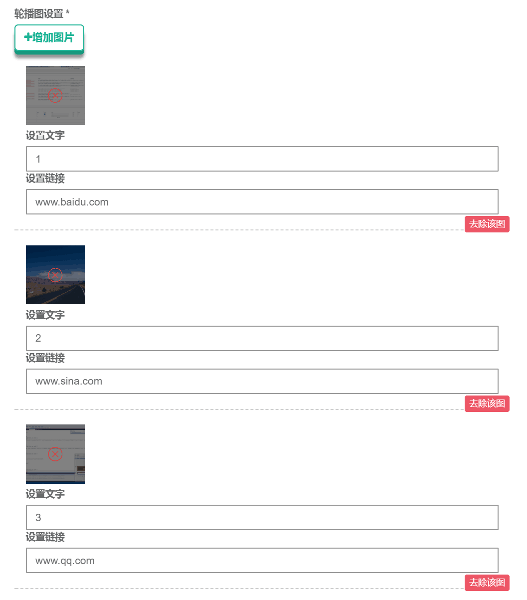

浅谈编程过程中的思维定势
在我们写代码时，需要经常考虑到代码的敏捷性和可复用性。这样，已经完成的模块不需要重复测试， 以前模块的组件可以为后面相同功能的模块服务，本是一件好事。
然而在写代码时，往往因为身体惰性和思维惰性，一心想用前面已开发好的组件而忽略更加简单的方法，从而浪费大量时间。
举个最近我在编程过程中遇到的例子。我以前做一个图片上传和显示的功能，首先把图片转换成Base64编码，然后拿到后台再存储成图片文件， 再返回文件的服务器路径以作显示。
图片的前端编码代码如下：
var reader = new FileReader();
reader.readAsDataURL(fileList[i]);
reader.onload = function (e) {
var image = new Image();
image.src = e.target.result;
image.onload = function () {
var expectWidth = this.naturalWidth;
var expectHeight = this.naturalHeight;
var canvas = document.createElement("canvas");
var ctx = canvas.getContext("2d");
canvas.width = expectWidth;
canvas.height = expectHeight;
ctx.drawImage(this, 0, 0, expectWidth, expectHeight);
var base64 = null;
base64 = canvas.toDataURL("image/jpeg", 0.8);
$(a).parent().prev().append("<li onclick='removeimg(this);' "+
"style='background-image:url(" + base64 + ");' myar=" + base64 +
"class='weui_uploader_file weui_uploader_status'><div class='weui_uploader_status_content'>"+
"<i class='weui_icon_cancel'></i></div></li>");
}
}
后来我根据图片的前端编码代码以及从后台返回的图片的服务器路径， 写出了图片的前端显示代码：
var image = new Image();
image.src = obj.Coverimg;
image.onload = function () {
var expectWidth = this.naturalWidth;
var expectHeight = this.naturalHeight;
var canvas = document.createElement("canvas");
var ctx = canvas.getContext("2d");
canvas.width = expectWidth;
canvas.height = expectHeight;
ctx.drawImage(this, 0, 0, expectWidth, expectHeight);
var base64 = null;
base64 = canvas.toDataURL("image/jpeg", 0.8);
$(".weui_uploader_files").append("<li onclick='removeimg(this);' "+
"style='background-image:url(" + base64 + ");' myar=" + base64 +
"class='weui_uploader_file weui_uploader_status'><div class='weui_uploader_status_content'>"+
"<i class='weui_icon_cancel'></i></div></li>");
}在单个图片的情况下，这样写也没什么问题。然而，现在要做一组列表， 每一个图片都对应着一段文字和一段链接：
那么问题就来了，image.onload是异步传输，哪个图片先传完那个图片就会先显示出来，而我要做的是哪个图片先开始传，哪个图片就先显示。
后来我试过一些方法，比如加锁，加延时。加锁的话写起来太麻烦，而加延时不仅无效还影响用户体验。我也想过先把图片显示出来，然后排序，同样的， 写起来非常麻烦。
后来我仔细分析了一下：传图片到后台已经拿到了图片的Base64编码，而取图片的目的也是拿到图片的Base64编码显示， 以便再次传入后台，那我取图片时直接用前台传到后台的Base64编码显示不就好了！直接：
for (var i = 0; i < picstr.length - 1; i++) {
var base64 = picbase64[i];
$(".weui_uploader_files").append("<li onclick='removeimg(this);' "+
"style='background-image:url(" + base64 + ");' myar=" + base64 +
"class='weui_uploader_file weui_uploader_status'><div class='weui_uploader_status_content'>"+
"<i class='weui_icon_cancel'></i></div></li>");
}这样就省去了图片异步加载的步骤，感觉非常简单啊！
所以平时我们在写代码时要实事求是，不能为了使用模板而去使用模板，要善于从源头解决问题，把握代码的关键之处。
原理与方法论
2017-06-29